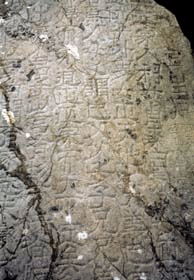

August 20, 2003
三生石－－好一个美丽的传说
 三生石上旧精魂，赏月吟风莫要论；惭愧情人远相访，此身虽异性长存。身前身后事茫茫，欲话因缘恐断肠；吴越山川寻己遍，却回烟棹上瞿塘。
三生石上旧精魂，赏月吟风莫要论；惭愧情人远相访，此身虽异性长存。身前身后事茫茫，欲话因缘恐断肠；吴越山川寻己遍，却回烟棹上瞿塘。
可以不相信轮回，能否认相识相爱都是缘分吗？
每次都三生石的网站，读着谒语一般的诗句，总让我想搞清三生石的真实含义。
好在有google，一搜竟搜出一个美丽的故事。林清玄有一篇散文《三生石上旧精魂》，把这个故事阐释得非常优美，把一个玄妙的哲理阐述得如此透彻。你可曾明了，我们每个人都站在自己的三生石上，象个懵懂玩童不愿抬头看一眼前生来世，只喜欢低头跟今生玩耍？
据说宝黛的凄美的爱情，就是从三生石边开始。这是真的吗？待抽空问一问xuaner.
林先生的文章，网上有好多版本，多是到“‘缘订三生’的俗话就是这样来的。”一句停住。可我觉得真正能触动我心的文字，好象却在此句之后。下面收录全文，供前来的朋友阅读。
宋朝的大诗人、大文学家苏东坡曾经写过一个非常有趣的故事《僧圆泽传》,这个故事发生于唐朝,距离苏东坡的年代并不远,而且人事时地物都记载得很详尽，相信是个真实的故事。
原文是文言文，采故事体，文章也浅白，所以并不难懂，我把原文附在下面，加上我自己的分段标点：
洛师惠林寺，故光禄卿李登居第。禄山陷东都，登以居守死之。
子源，少时以贵游子，豪侈善歌闻于时，及登死，悲愤自誓，不仕、不娶、不食肉，居寺中五十余年。
寺有僧圆泽，富而知音，源与之游，甚密，促膝交语竟日，人莫能测。
一日相约游青城峨嵋山，源欲自荆州沂峡，泽欲取长安斜谷路，源不可，曰：“行止固不由人。"遂自荆州路。
舟次南浦，见妇人锦裆负瓮而汲者，泽望而泣：“吾不欲由此者，为是也。”
源惊问之，泽曰：“妇人姓王氏，吾当为之子，孕三岁矣！吾不来，故不得乳。今既见，无可逃者，公当以符咒助我速生。三日浴儿时，愿公临我，以笑为信。后十三年，中秋月夜，杭州天竺寺外，当与公相见。”
源悲悔，而为具沐浴易服，至暮，泽亡而妇乳。三日往视之，儿见源果笑，具以告王氏，出家财，葬泽山下。 遂不果行，反寺中，问其徒，则既有治命矣！
后十三年，自洛适吴，赴其约。至约所，闻葛洪川畔，有牧童，扣牛角而歌之曰：“三生石上旧精魂，赏月吟风莫要论；惭愧情人远相访，此身虽异性长存。”
呼问：“泽公健否？”
答曰：“李公真信士.然俗缘未尽，慎勿相近，惟勤修不堕，乃复相见。"又歌曰：“身前身后事茫茫，欲话因缘恐断肠；吴越山川寻己遍，却回烟棹上瞿塘。”
遂去不知所之。
后三年，李德裕奏源忠臣子，笃孝。拜谏议大夫，不就。竟死寺中，年八十。
这真是一个动人的故事。它写朋友的真情、写人的本性、写生命的精魂，历经两朝而不改变，读来令人动容。
它的大意是说，富家子弟李源，因为父亲在变乱中死去而体悟人生无常，发誓不做官、不娶妻、不吃肉食，把自己的家捐献出来改建惠林寺，并住在寺里修行。
寺里的住持圆泽禅师，很会经营寺产，而且很懂音乐，李源和他成了要好的朋友，常常坐着谈心，一谈就是一整天，没有人知道他们在谈什么。
有一天，他们相约共游四川的青城山和峨嵋山，李源想走水路从湖北沿江而上，圆泽却主张由陆路取道长安斜谷入川。李源不同意。圆泽只好依他，感叹地说：“一个人的命运真是由不得自己呀！”
于是一起走水路，到了南浦，船靠在岸边，看到一个穿花缎衣裤的妇人正到河边取水，圆泽看着就流下了泪来，对李源说：“我不愿意走水路就是怕见到她呀！"李源吃惊地问他原因，他说：“她姓王，我注定要做她的儿子，因为我不肯来，所以她怀孕了三年还生不下来，现在既然遇到了，就不能再逃避。现在请你用符咒帮我速去投生，三天以后洗澡的时候，请你来王家看我，我以一笑作为证明。十三年后的中秋夜，你来杭州的天竺寺外，我一定来和你见面。”
李源一方面悲痛后悔，一方面为他洗澡更衣，到黄昏的时候，圆泽就死了，河边看见的妇人也随之生产了。
三天以后李源去看婴儿，婴儿见到李源果真微笑，李源便把一切告诉王氏，王家便拿钱把圆泽埋葬在山下。
李源再也没有心思去游山，就回到惠林寺，寺里的徒弟才说出圆泽早就写好了遗书。
十三年后，李源从洛阳到杭州西湖天竺寺，去赴圆泽的约会，到寺外忽然听到葛洪川畔传来牧童拍着牛角的歌声：
我是过了三世的昔人的魂魄，
赏月吟风的往事早已过去了；
惭愧让你跑这么远来探访我，
我的身体虽变了心性却长在。 李源听了，知道是旧人，忍不住问道：
"泽公，你还好吗？”
牧童说：“李公真守信约，可惜我的俗缘未了，不能和你再亲近，我们只有努力修行不堕落，将来还有会面的日子。"随即又唱了一首歌：
身前身后的事情非常渺茫，
想说出因缘又怕心情忧伤；
吴越的山川我已经走遍了，
再把船头掉转到瞿塘去吧！
牧童掉头而去，从此不知道他往哪里去了。
再过三年，大臣李德裕启奏皇上，推荐李源是忠臣的儿子又很孝顺，请给予官职。于是皇帝封李源为谏议大夫，但这时的李源早已彻悟，看破了世情，不肯就职，后来在寺里死去，活到八十岁。
真有三生石吗？
圆泽禅师和李源的故事流传得很广，到了今天，在杭州西湖天竺寺外，还留下来一块大石头，据说就是当年他们隔世相会的地方，称为"三生石"。
"三生石"一直是中国极有名的石头，可以和女娲补天所剩下的那一块玩石相媲美，后来发展成中国人对生前与后世的信念，不但许多朋友以三生石作为肝胆相照的依据，更多的情侣则在三生石上写下他们的誓言，"缘订三生"的俗话就是这样来的。
前面说过，这个故事很可能是真实的，但不管它是不是真实，至少是反映了中国人对于生命永恒的看法、真性不朽的看法。透过了这种"轮"与"转世"的观念，中国人建立了深刻的伦理、生命、哲学，乃至于整个宇宙的理念，而这正是佛教的一种入世观照和慧解。
我们常说"七世夫妻"，常说"不是冤家不聚头"，常说"十年修得同船渡，百年修得共枕眠"，常说"缘订三生，永浴爱河"……甚至于在生气的时候咬牙说：“我死了也不会放过你！
"在歉意的时候红着脸说：“我下辈子做牛做马来报答你！"在失败灰心丧志的时候会说：“前辈子造了什么孽呀！"看到别人夫妻失和时会说：“真是前世的冤家！” 这种观念在中国是无孔不入的，民间妇女杀鸡杀鸭时会念着：“做鸡做鸭无了时，希望你下辈子去做有钱人的儿子。"乃至连死刑犯临刑时也会大吼一声：“二十年后，又是一条好汉！”
所以，"三生石"应该是有的。
其实，轮回与转世都是佛教的基本观念，佛教里认为有生就有死，有情欲就有轮回，有因缘就有果报，所以生生世世做朋友是可能的，永生永世做爱侣也是可能的，当然，一再的做仇敌也是可能的……但生生世世，永生永世就永处缠缚，不得解脱，唯有放下一切才能超出轮回的束缚。
在《出曜经》里有一首谒，很能点出生死轮回的本质：
伐树不尽根，虽伐犹复生；
伐爱不尽本，数数复生苦。
犹如自造箭，还自伤其身；
内箭亦如是，爱箭伤众生。在这里，爱作欲解，没有善恶之分，被仇恨的箭所射固然受伤，被爱情的箭射中也是痛苦的，一再的箭就带来不断的伤，生生世世地转下去。
另外，在《圆觉经》里有两段讲轮回，讲得更透彻：
"一切众生，从无始际，由有种种恩爱贪欲，故有轮回，若诸世界一切种性，卵生、胎生、湿生、化生，皆因淫欲而正性命。当知轮回，爱为根本。由有诸欲，助发爱性，且故能令生死相续。欲因爱生，命因欲有，众生爱命，还依欲本。爱欲为因，爱命为果。” "一切世界，始终生灭，前后有无，聚散起止，念念相续，循环往复，种种取舍，皆是轮回。未出轮回，而辨圆觉；彼圆觉性，即同流转；若免轮回，无有是处。譬如动目，能摇湛水，又如定眼，犹回转火，云驶月运，舟行岸移，亦复如是。”
可见，轮回的不只是人，整个世界都在轮回。我们看不见云了，不表示云消失了，是因为云离开我们的视线；我们看不见月亮，不表示没有月亮，而是它运行到背面去了；同样的，我们的船一开动，两岸的风景就随着移动，世界的一切也就这样了。人的一生就像行船，出发、靠岸，船(本性)是不变的，但岸(身体)在变，风景(经历)就随之不同了。
这种对轮回的譬喻，真是优美极了。
谈过轮回，我再说一个故事，这是和苏东坡齐名的大诗人黄山谷的亲身经历。黄山谷是江西省修水县人，这故事就出自修水县志。
黄山谷中了进士以后，被朝廷任命为黄州的知府，就任时才二十六岁。
有一天他午睡的时候做梦，梦见自己走出府衙到一个乡村里去，他看到一位满头白发的老太婆，站在家门外的香案前，香案上供着一碗芹菜面，口中还叫着一个人的名字。黄山谷 走向前去，看到那碗面热气腾腾好象很好吃，不自觉端起来吃，吃完了回到衙门，一觉睡醒，嘴里还留着芹菜的香味，梦境十分清晰，但黄山谷认为是做梦，并不以为意。
到了第二天午睡，又梦到一样的情景，醒来嘴里又有芹菜的香味，因此感到非常奇怪，于是起身走出衙门，循着梦中的道路走去，一直走到老太婆的家门外，敲门进去，正是梦里见到的老妇，就问她有没有摆面在门外，喊人吃面的事。
老太婆回答说：“昨天是我女儿的忌辰，因为她生前喜欢吃芹菜面，所以我在门外喊她吃面，我每年都是这样喊她。”
"您女儿死去多久了？”
"已经二十六年了。”
黄山谷心想自己正好二十六岁，昨天也正是自己的生日，于是再问她女儿生前的情形，家里还有什么人。
老太婆说：“我只有一个女儿，她以前喜欢读书，念佛吃素，非常孝顺，但是不肯嫁人，到二十六岁时生病死了，死的时候对我说她还要回来看我。”
"她的闺房在哪里，我可以看看吗？"黄山谷问道。
老太婆指着一间房间说：“就是这一间，你自己进去看，我给你倒茶去。”
山谷走进房中，只见房里除了桌椅，靠墙有一个锁着的大柜。
山谷问：“里面是些什么？” "全是我女儿的书。”
"可以开吗？”
"钥匙不知道她放在哪里，所以一直打不开。”
山谷想了一下，记起放钥匙的地方，便告诉老太婆找出来打开书柜，发现许多文稿。他细看之下，发现他每次试卷写的文章竟然全在里面，而且一字不差。
黄山谷这时才完全明白他已回到前生的老家，老太婆便是他前生的母亲，老家只剩下她孤独一人。于是黄山谷跪拜在地上，说明自己是她女儿转世，认她为母，然后回到府衙带人来迎接老母，奉养终身。
后来，黄山谷在府衙后园植竹一丛，建亭一间，命名为"滴翠轩"，亭中有黄山谷的石碑刻像，他自题像赞曰：
似僧有发，似俗脱尘；
作梦中梦，悟身外身。为他自己的转世写下了感想，后来明朝的诗人袁枚读到这个故事曾写下"书到今生读已迟”的名句，意思是说像黄山谷这样的大文学家，诗书画三绝的人，并不是今生才开始读书的，前世已经读了很多书了。
黄山谷体会了转世的道理，晚年参禅吃素，曾写过一首戒杀诗：
我肉众生肉，名殊体不殊；
元同一种性.只是别形躯。
苦恼从他受，肥甘为我须；
莫教阎老断，自揣看何如？ 苏轼和黄山谷的故事说完了，很玄是吗？
也不是那么玄的，有时候我们走在一条巷子里，突然看见有一家特别的熟悉；有时候我们遇见一个陌生人，却有说不出的亲切；有时候做了一个遥远的梦，梦境清晰如见；有时候一首诗、一个古人，感觉上竟像相识很久的知己；甚至有时候偏爱一种颜色、一种花香、一种声音，却完全说不出理由……
人生，不就是这样偶然的吗？每个人都站在自己的三生石上，只是忘了自己的旧精魂罢了。
一九八六年一月十五日
(世间的一切都是缘分，我们相识也是一种缘分，相爱更加是一种缘分)
转自 http://www.cqttg.com/jxtt/lqxsw-39.htm
Posted by Hilton at August 20, 2003 03:59 PM | TrackBack
非常感谢xuaner的精辟讲解！
Posted by: hilton at August 21, 2003 04:46 PM宝黛的爱情是前世的姻缘。在红楼第一回，就已经说明，待我引用给你看：
那僧笑道:"此事说来好
笑,竟是千古未闻的罕事.只因西方灵河岸上三生石畔,有绛珠草一株,时有赤瑕宫神
瑛侍者, 日以甘露灌溉,这绛珠草始得久延岁月.后来既受天地精华,复得雨露滋养,
遂得脱却草胎木质,得换人形,仅修成个女体,终日游于离恨天外,饥则食蜜青果为膳
, 渴则饮灌愁海水为汤.只因尚未酬报灌溉之德,故其五内便郁结着一段缠绵不尽之
意.恰近日这神瑛侍者凡心偶炽,乘此昌明太平朝世,意欲下凡造历幻缘,已在警幻仙
子案前挂了号.警幻亦曾问及,灌溉之情未偿,趁此倒可了结的.那绛珠仙子道:`他是
甘露之惠,我并无此水可还.他既下世为人,我也去下世为人,但把我一生所有的眼泪
还他, 也偿还得过他了.'因此一事,就勾出多少风流冤家来,陪他们去了结此案."
我当初取名三生石，倒不知道林清玄的故事，而是因为苏轼的僧圆泽传的故事，红楼中的三生石，以及杭州天竺寺旁的三生石。
Posted by: xuaner at August 21, 2003 04:15 PM